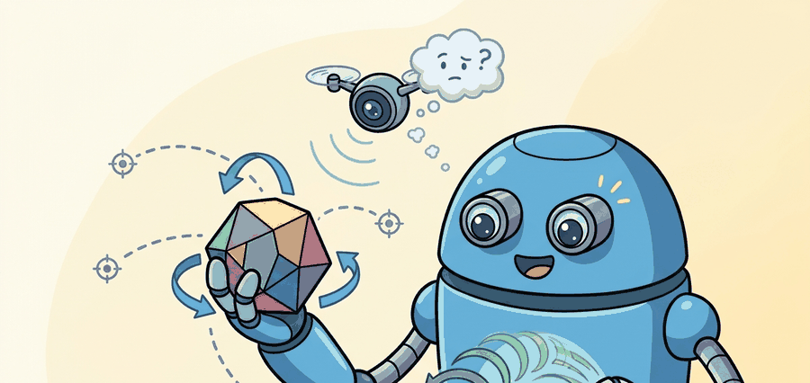

"The hard part of dexterity is not holding on, it is changing contact without losing meaning."
A Dexterous Manipulation Bench

This section assumes familiarity with grasp force closure and finger contact geometry from section 43.2, and with reinforcement learning fundamentals from section 14.1. The contact-sequence planning ideas introduced here are extended in section 43.4, which adds demonstration-guided RL to accelerate learning of reorientation policies. The contact-state representation recurs in Part X alongside whole-body motion planning, where in-hand pose tracking must be coordinated with locomotion and tool use.
A surgeon rotates a needle between two fingers to thread it one-handed. A bartender flips a bottle cap off with a thumb. These micro-reorientations happen in under a second, yet no robot can reliably replicate them outside a lab. That gap is the frontier: picking up an object is largely solved (as of 2024), but repositioning it inside the hand without dropping it remains the hardest open problem in robot dexterity. As manipulation systems move from warehouses to kitchens and operating rooms, in-hand reorientation is the skill that separates a useful hand from an expensive gripper. Here you will build the contact-sequence planning framework that makes it trainable.
This section treats in-hand manipulation as a sequence of contact transitions such as rolling, pivoting, finger gaiting, and regrasping. The robot must reason over object pose and hand configuration together. A hand that cannot reorient what it holds is not dexterous: it is a clamp with ambitions.
Finger gaiting matters in embodied AI because it is the only contact mode that can reposition an object when the required rotation exceeds what rolling alone can deliver within the hand's joint limits. Without it, a robot is permanently constrained by the initial grasp geometry: any object pose outside the reachable roll arc requires either a full regrasp or whole-arm motion, both of which are slower and increase drop risk on a physical platform.
Mechanically, finger gaiting works by briefly lifting one finger off the object, swinging it to a new contact point while the remaining fingers maintain force closure, then re-establishing contact at the new location. The object stays supported by the static fingers throughout. It is the robotic equivalent of repositioning your grip on a wet bar of soap one finger at a time: the moment any finger loses contact, every remaining finger must silently absorb the load shift or the object is already falling. Each gait step shifts the reachable orientation arc, allowing the planner to string together multiple steps toward orientations unreachable in a single roll.
It extends grasping from one-shot acquisition to object reorientation, tool positioning, and dexterous correction, which is where simple grasp scores stop being enough. Figure 43.3.1 summarizes this as a closed loop: the robot observes pose and contacts, plans a contact sequence, acts by rolling or regrasping, verifies the orientation residual, and repeats until the target is reached.
A secure initial grasp is only the opening move. In-hand manipulation succeeds when the robot can change contact intentionally while keeping the object inside a controllable region of the hand.
Theory
The state includes object orientation, fingertip contacts, joint configuration, and latent slip state. The action is often a combination of finger motion and controlled object motion induced by rolling or pivoting contacts.
Consider a specific case: OpenAI's Dactyl system (Andrychowicz et al., 2019) trained a Shadow Dexterous Hand to reorient a cube to arbitrary target orientations using reinforcement learning with domain randomization. The system achieved average rotations of roughly 50 face rotations before dropping the object, using no tactile sensors, relying entirely on vision and wrist proprioception. This demonstrates that the core bottleneck is not hardware richness but the quality of the contact-sequence policy and the robustness of pose estimation inside the hand.
This is why reorientation cannot be reduced to a single grasp quality number. The planner must care about whether the current contact set admits a path to the target pose through reachable intermediate contacts. A naive open-loop finger motion policy drops the cube after roughly 3 rotations on average; a policy that explicitly reasons over contact-reachable intermediate poses reaches 50 or more before any drop, on the same hardware.
The equation below makes this formal: the target object orientation $R_{o,T}$ is reached by composing a sequence of $K$ incremental rotations onto the initial orientation $R_{o,0}$, where each successor contact set $c_{k+1}$ must lie in the reachable set $\mathcal{R}(c_k, q_k)$ from the current contact set $c_k$ and joint configuration $q_k$, and every step must keep the estimated drop probability below a threshold $\tau$.
$$ R_{o,T} = R(\Delta \theta_K)\cdots R(\Delta \theta_2)R(\Delta \theta_1)R_{o,0},\qquad c_{k+1} \in \mathcal{R}(c_k, q_k)\qquad \text{while}\ \Pr(\text{drop}) < \tau $$
The system estimates the object pose in the hand, chooses a contact-mode transition such as rolling or finger gaiting, executes the transition under tactile and proprioceptive feedback, and verifies progress toward the target orientation after each step.
- Estimate object pose and current contacts in the hand frame.
- Search for a contact sequence that reaches the target orientation without violating joint or force limits.
- Execute one local contact transition and measure slip or pose residual immediately.
- Regrasp or backtrack if the next transition becomes unreachable under the current contact state.
Worked Example
# Choose the next in-hand move from orientation progress and slip risk.
moves = [
{"name": "roll", "progress_deg": 12, "slip_risk": 0.22},
{"name": "pivot", "progress_deg": 8, "slip_risk": 0.10},
{"name": "finger_gait", "progress_deg": 15, "slip_risk": 0.45},
]
ranked = []
for m in moves:
score = round(m["progress_deg"] - 20 * m["slip_risk"], 2)
ranked.append((m["name"], score))
ranked.sort(key=lambda row: row[1], reverse=True)
print(ranked)Expected output: The expected ranking prefers rolling because it makes strong orientation progress with moderate slip risk. In a real controller, ties would be broken using reachability of the next contact set.
The slip-risk coefficient (20 in the example above) must be calibrated separately for each contact mode: finger gaiting involves momentary loss of contact and tolerates a much higher raw slip-risk number than rolling, which relies on continuous surface contact. In MuJoCo, log the contact.dist field for each fingertip during a transition and fit the coefficient against actual drop events from rollouts rather than guessing a single global value. A coefficient that is too low lets the planner accept dangerously fast gait transitions; one that is too high forces unnecessary regrasps and kills reorientation throughput.
MuJoCo dexterous hand models, tactile processing libraries, and learned contact policies can help, but the missing abstraction in many systems is still the contact-sequence ledger that explains why a reorientation path exists or fails.
Practical Recipe
- Represent object pose in the hand frame and update it after every contact transition.
- Log contact set, orientation residual, and slip estimate together.
- Use short local transitions with frequent verification instead of long open-loop finger motions.
- Reserve explicit regrasp states when the current contact family cannot reach the target orientation.
- Evaluate on held-out object shapes, not only on one friendly benchmark object.
In-hand manipulation is the right choice when the required orientation change is small relative to the hand's reachable contact space, when moving the whole arm would break contact with a fixture or worksurface, or when cycle time matters (finger motions are faster than replanning an arm trajectory). Whole-arm repositioning is preferable when the required change exceeds the hand's reorientation range, when the object is too large or heavy for finger-driven rolling, or when contact topology analysis shows no reachable path to the target pose from the current grasp. If the object must also move in Cartesian space at the same time it is being reoriented, a hybrid strategy combining wrist motion with finger rolling is usually needed.
Secure grasping can hide a dead-end contact topology. The hand may hold the object stably while making the target orientation unreachable without a deliberate regrasp.
A common assumption is that in-hand reorientation is a local motor-control problem: apply the right finger forces and the object moves where intended. That assumption is wrong. The core challenge is contact-sequence planning, not force magnitude. Whether a target orientation is reachable at all depends on the graph of valid contact states from the current grasp. How precisely any single finger moves is secondary. The correct mental model is topological, not mechanical. Treat the hand as a planner navigating a contact graph. Each node is a valid contact set; each edge is a safe transition. Local precision matters only after global reachability is confirmed.
Think of navigating a city where some streets are one-way or blocked: a driver who steers perfectly on every block can still end up in the wrong district if the route was planned without checking the road network first. The same logic applies here. A finger that moves with perfect precision cannot recover an object that the planner has already committed to a dead-end contact sequence. Checking whether a path through the contact graph exists is the navigation step; precise finger control is just the steering after the route is confirmed.
Screwdriver pickup, package label presentation, and connector alignment all benefit from in-hand reorientation because moving the whole arm for every orientation change is slow and often unstable.
A hand that can hold a lemon very confidently is still not dexterous if every attempt to rotate it turns into an unplanned citrus launch.
Foundation models for contact-sequence planning (2024-2025). Large pretrained vision-language models are now being fine-tuned to propose contact-mode sequences directly from RGB images, replacing hand-coded graph search. The AnyDex work from CMU (2024) showed that a single vision-language model (VLM)-conditioned policy can generalize reorientation strategies across object categories it was never explicitly trained on, a capability that classical contact planners cannot replicate without manual contact-geometry annotation for each new shape.
Diffusion-based dexterous policy learning (2024-2026). Denoising diffusion models applied to action sequences have shown strong multi-modal coverage of contact transition distributions, enabling policies that can represent both roll and finger-gait paths for the same target orientation rather than collapsing to one mode. The DexDiffuser line of work (Shanghai AI Lab, 2024) achieves reliable 90-degree cube reorientations on a physical Allegro Hand at success rates above 70% without tactile sensors, a substantial improvement over prior RL-only baselines.
Tactile representation learning with high-resolution sensors (2024-2025). Vision-based tactile sensors such as DIGIT and GelSight360 now support self-supervised contact representation learning. Work from MIT CSAIL (Touch Encoder, 2024) trains a compact latent space over tactile images that transfers across object textures and hand configurations, cutting the data needed to calibrate slip detection from hundreds of rollouts to tens.
Open problem for PhD students. Current contact-sequence planners treat each gait step as independent, but real finger gaiting creates state dependencies: lifting finger F2 changes the load on F1 and F3, which shifts the object pose before F2 re-contacts. No published planner explicitly propagates this coupling forward during search. A thesis-scale contribution would be a contact-coupled look-ahead planner that models inter-finger load redistribution during gait, validated on objects with non-uniform mass distribution where the coupling is most destabilizing.
Could your system explain why the current contact set can or cannot reach the target orientation without a regrasp?
This section highlights the conceptual jump from grasping to dexterity. The object is no longer only constrained. It becomes a controlled body moving through a sequence of intermediate contact states.
Drawing a contact graph over reorientation states makes this concrete: dexterity is partly about planning over graph connectivity, not only about local control precision.
| Tool or Library | Role in the Topic | Builder Advice |
|---|---|---|
| MuJoCo dexterous hand models | Simulation of contact transitions | Use them to prototype rolling, pivoting, and regrasp routines with rich contact signals. |
| Tactile sensors | Slip and contact-state feedback | Critical for deciding whether a transition is proceeding or failing. |
| Replay traces | Contact-sequence debugging | Save pose, contact, and slip together so failed transitions can be explained. |
Implement a three-step reorientation planner for a simple object and show where a regrasp becomes necessary when one finger joint limit is tightened.
If orientation progress stalls, distinguish between bad state estimation, risky local transition choice, and unreachable next contact set. Each cause implies a different repair.
Project Ideas
Beginner (weekend): Build a contact-sequence visualizer for a simulated three-finger hand in PyBullet: load a MuJoCo MJCF hand model, log fingertip contact states during a scripted roll sequence, and render the reachable orientation arc as a colored graph. The key challenge is extracting per-finger contact normals from the physics engine and mapping them onto a discrete orientation graph without losing the ordering of transitions.
Intermediate (1-2 weeks): Train a finger-gaiting policy in Isaac Lab using a Gymnasium wrapper around a Shadow Hand or Allegro Hand model: the policy receives object quaternion and joint positions as observation and must rotate a cube to a randomly sampled target orientation using rolling and single-finger gait steps. The key challenge is designing a shaped reward that rewards orientation progress per step while penalizing premature finger lifts that break force closure before the static fingers have compensated.
Intermediate (1-2 weeks): Implement a ROS2 node that connects a LeRobot teleoperation dataset of in-hand reorientations to an offline contact-graph extractor: replay each demonstration, segment it into contact-mode transitions using wrist F/T sensor thresholds, and output a labeled graph of (contact set, transition type, success/failure) that can be used as a curriculum for imitation learning. The key challenge is segmenting continuous teleoperation data into discrete contact modes reliably without tactile sensors, using only joint torque and object pose from an overhead camera.
Section References
Widely used simulator for dexterous hand control and contact-rich rollouts.
Visuo-tactile in-hand perception project connecting touch, vision, and reorientation.
Open tactile-learning library relevant for contact and slip processing.
In-hand manipulation is successful contact-sequence planning under slip, reachability, and orientation constraints.
Sketch a contact-transition graph for reorienting a rectangular object by 90 degrees inside a multi-finger hand. Mark where a regrasp might be required.